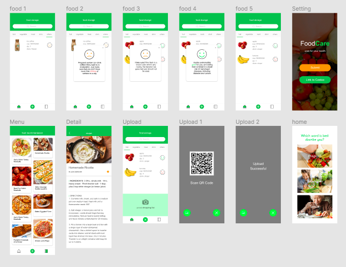
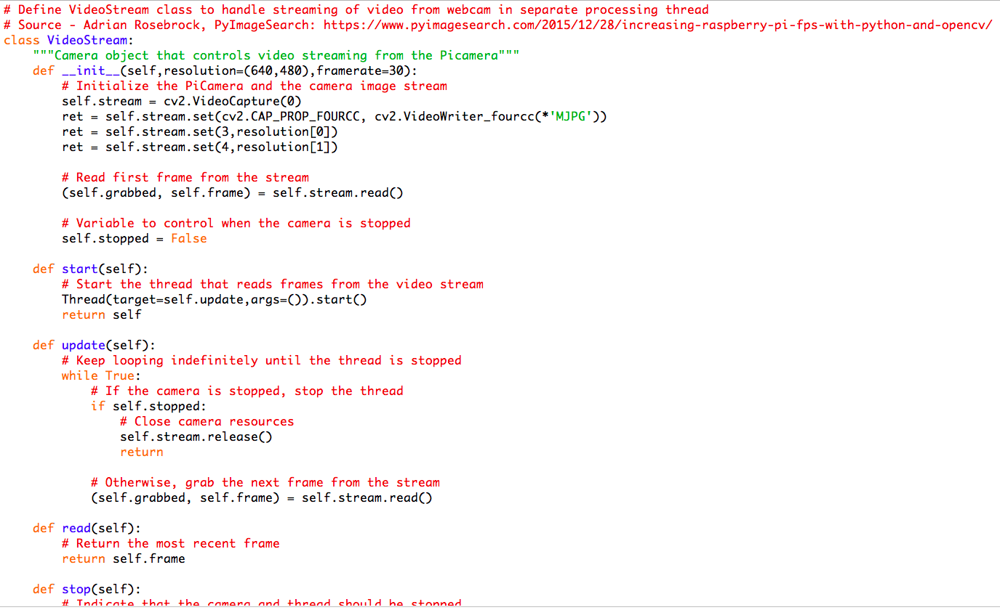
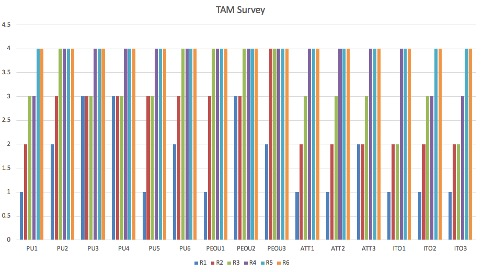

Care modes
Pregnancy, vegetarian, and older-adult scenarios structured the initial concept.
Smart home / Computer vision / 2020 - ongoing
A food recognition and dietary support concept that connects smart-home sensing, mobile feedback, and behaviour design.
01 / Brief
FoodCare explored how a smart-home system could recognise food entering a household and provide dietary guidance for people with specific needs. The early concept considered pregnancy, vegetarian, and older-adult scenarios before focusing the first evaluation on pregnancy-related dietary care.
The prototype linked an uploaded shopping list with camera recognition near food storage. When food was detected, the system could identify the category, monitor expiry information, and surface a recommendation through a mobile interface and voice feedback.
Pregnancy, vegetarian, and older-adult scenarios structured the initial concept.
A Technology Acceptance Model survey tested usability and willingness to adopt.
A physical recognition prototype and mobile interface formed one service flow.
02 / Prototype
The user links an online grocery account or uploads a list to establish expected items.
A camera and Raspberry Pi prototype capture items as they are placed into storage.
The system compares the detected category with dietary considerations selected by the user.
Mobile and voice feedback provide a recommendation while keeping the result visible and reviewable.



03 / Research
Early surveys and semi-structured interviews helped define the care scenarios and prototype requirements. The evaluation then used Technology Acceptance Model measures to investigate perceived usefulness, ease of use, attitude, and intention.
Participants were interested in the potential value but raised concerns about recognition accuracy, privacy, security, and whether the technology had been proven. Those findings shifted the design focus from detection alone to trust, transparency, and user control.
